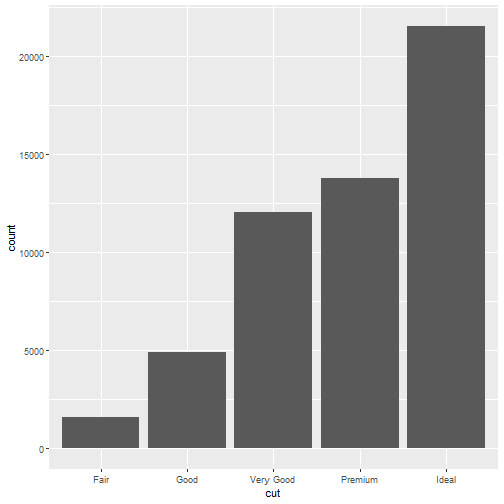
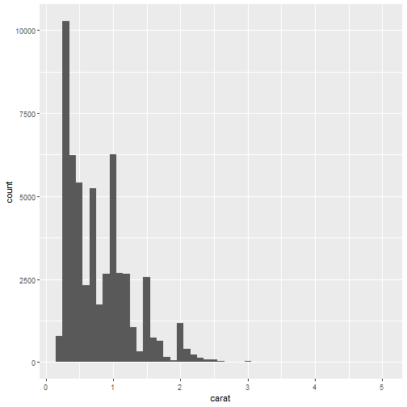
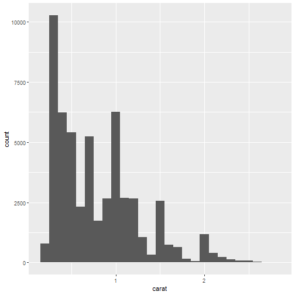
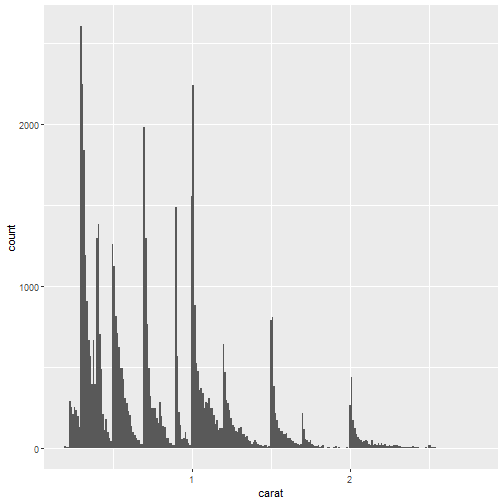
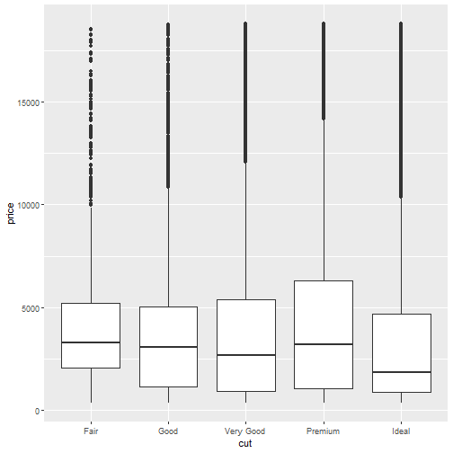
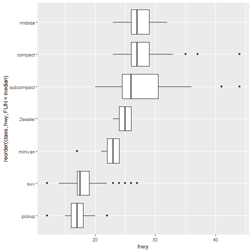
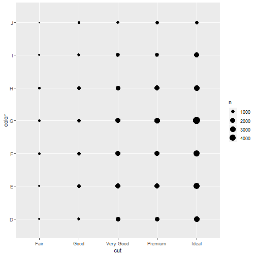
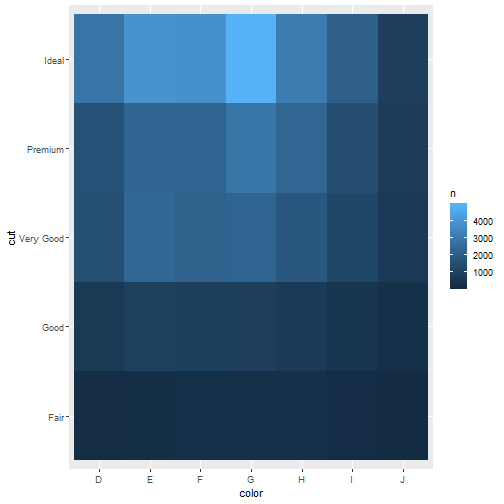

Exploratory Data Analysis
Adam J Sullivan
Assistant Professor of Biostatistics
Brown University
Exploratory Data Analysis
Exploratory Data Analysis
- We have already started the basic steps to exploratory data analysis.
- So far we have:
- Looked at Data
- Summarized characteristics
- Graphed relationships and distributions.
Exploratory Data Analysis
- First step
- Know your dataset.
Checkout the Data
library(dplyr)
library(ggplot2)
glimpse(diamonds)
str(diamonds)
glimpse() Function
## Observations: 53,940
## Variables: 10
## $ carat <dbl> 0.23, 0.21, 0.23, 0.29, 0.31, 0.24, 0.24, 0.26, 0.22, ...
## $ cut <ord> Ideal, Premium, Good, Premium, Good, Very Good, Very G...
## $ color <ord> E, E, E, I, J, J, I, H, E, H, J, J, F, J, E, E, I, J, ...
## $ clarity <ord> SI2, SI1, VS1, VS2, SI2, VVS2, VVS1, SI1, VS2, VS1, SI...
## $ depth <dbl> 61.5, 59.8, 56.9, 62.4, 63.3, 62.8, 62.3, 61.9, 65.1, ...
## $ table <dbl> 55, 61, 65, 58, 58, 57, 57, 55, 61, 61, 55, 56, 61, 54...
## $ price <int> 326, 326, 327, 334, 335, 336, 336, 337, 337, 338, 339,...
## $ x <dbl> 3.95, 3.89, 4.05, 4.20, 4.34, 3.94, 3.95, 4.07, 3.87, ...
## $ y <dbl> 3.98, 3.84, 4.07, 4.23, 4.35, 3.96, 3.98, 4.11, 3.78, ...
## $ z <dbl> 2.43, 2.31, 2.31, 2.63, 2.75, 2.48, 2.47, 2.53, 2.49, ...
str() Function
## Classes 'tbl_df', 'tbl' and 'data.frame': 53940 obs. of 10 variables:
## $ carat : num 0.23 0.21 0.23 0.29 0.31 0.24 0.24 0.26 0.22 0.23 ...
## $ cut : Ord.factor w/ 5 levels "Fair"<"Good"<..: 5 4 2 4 2 3 3 3 1 3 ...
## $ color : Ord.factor w/ 7 levels "D"<"E"<"F"<"G"<..: 2 2 2 6 7 7 6 5 2 5 ...
## $ clarity: Ord.factor w/ 8 levels "I1"<"SI2"<"SI1"<..: 2 3 5 4 2 6 7 3 4 5 ...
## $ depth : num 61.5 59.8 56.9 62.4 63.3 62.8 62.3 61.9 65.1 59.4 ...
## $ table : num 55 61 65 58 58 57 57 55 61 61 ...
## $ price : int 326 326 327 334 335 336 336 337 337 338 ...
## $ x : num 3.95 3.89 4.05 4.2 4.34 3.94 3.95 4.07 3.87 4 ...
## $ y : num 3.98 3.84 4.07 4.23 4.35 3.96 3.98 4.11 3.78 4.05 ...
## $ z : num 2.43 2.31 2.31 2.63 2.75 2.48 2.47 2.53 2.49 2.39 ...
Data Look
- Using the
glimpse()function andstr()function. - This shows you the variables, what type they are and some information on values.
- This is the first step you take with any dataset.
Exploring the Dataset
- The rest of exploring comes from summaries and visualizations.
- We tend to use different statistical summaries and visualizations depending on the type of data:
- Categorical (Discrete)
- Continuous
Descriptive Statistics
| Categorical | Continuous |
|---|---|
| Frequency | Mean |
| Proportion | Median |
| Variance | |
| Standard Deviation | |
| Minimum | |
| Maximum | |
| Percentiles | |
| etc. |
Graphical Methods
| Categorical | Continuous |
|---|---|
| Bar Plots | Histograms |
| Boxplots | |
| etc. |
Again with all of them?
- In the class on summarizing data we actually showed how to do these counts and basic stats.
- In the class on data visualizations we showed how to make graphs.
- What should we be doing for EDA?
Purpose of EDA
- For now we will consider the purpose of EDA to be:
- Visualizing the distribution.
- Understanding the center.
- Understanding the variation.
- Relationships of variables.
Purpose of EDA
- We will use EDA to:
- Help us explore interesting features of the data.
- Generate more questions about data.
- Learn what models might be possible.
- Connect data to mathematical models.
- There is no right way to do EDA but it is crucial to begin with this.
EDA
Exploring Distributions
- We learned about the story of different distributions.
- We also need to know what data looks like to help us know if the data follows that story or a similar one.
- We will do this with some basic graphs.
Distribution of Categorical
library(ggplot2)
ggplot(data = diamonds) +
geom_bar(aes(x=cut))
Distribution of Categorical

Counts with R
diamonds %>%
count(cut)
## # A tibble: 5 x 2
## cut n
## <ord> <int>
## 1 Fair 1610
## 2 Good 4906
## 3 Very Good 12082
## 4 Premium 13791
## 5 Ideal 21551
What do we see?
- We can see that this not even close to a uniform distribution.
- It appear to increase with quality.
Distribution of Continuous
- We can do similar plots for continuous values.
ggplot(data = diamonds) +
geom_histogram(aes(x = carat), binwidth = 0.5)
Distribution of Continuous

Count in R
diamonds %>%
count(cut_width(carat, 0.5))
## # A tibble: 11 x 2
## `cut_width(carat, 0.5)` n
## <fct> <int>
## 1 [-0.25,0.25] 785
## 2 (0.25,0.75] 29498
## 3 (0.75,1.25] 15977
## 4 (1.25,1.75] 5313
## 5 (1.75,2.25] 2002
## 6 (2.25,2.75] 322
## 7 (2.75,3.25] 32
## 8 (3.25,3.75] 5
## 9 (3.75,4.25] 4
## 10 (4.25,4.75] 1
## 11 (4.75,5.25] 1
What do we see?
- There are the most in 0.25 to 0.75 carat.
- We should try other bin sizes to see if there are differences.
Bin size 0.1

Hardly any beyond 3
diamonds2 <- diamonds %>%
filter(carat<3)
Plotting Again

EDA Questions
- EDA leads us to more questions as we explore.
- Which values are most common? Why?
- Which value are rare? Does this make sense?
- Any patterns in the data?
Bin width 0.01

Questions raised
- Why are there more whole number than fractional carats?
- Why are there more diamonds slightly to the right and left of each peak?
- Why are there none larger than 3?
Clusters
- How are the observations within each cluster similar to each other?
- How are the observations in separate clusters different from each other?
- How can you explain or describe the clusters?
- Why might the appearance of clusters be misleading?
Variation
- Variance: 0.2201044
- Standard Deviation: 0.4691529
- Just the number doesn't tell the whole story.
- It doesn't show us the groupings or relationships.
- We need to understand how a distribution looks and varies within itself.
Relationships Between Variables
Relationships Between Variables
- We will explore how variables covary together by considering the following:
- Categorical and Continuous Variables
- Two Categorical Variables
- Two Continuous Variables
Categorical and Continuous Variables
Box plots

Boxplot
ggplot(data = diamonds, aes(x = cut, y = price)) +
geom_boxplot()
Boxplot

Boxplots: What we see
- Display a lot of information.
- We get a sense of the center by the median line.
- We get a sense of variation based on the width of the box.
- We get a sense of outliers by the points that are graphed.
More Boxplots
ggplot(data = mpg, aes(x = class, y = hwy)) +
geom_boxplot()
More Boxplots
ggplot(data = mpg, aes(x = class, y = hwy)) +
geom_boxplot()
Categories
cuthad a natural ordering.classdoes not, so we could order in our own fashion.
Re-ordering
ggplot(data = mpg) +
geom_boxplot( aes(x = reorder(class, hwy, FUN = median), y = hwy))
Re-ordering

Flipping the Coordinates
ggplot(data = mpg) +
geom_boxplot(aes(x = reorder(class, hwy, FUN = median), y = hwy)) +
coord_flip()
Flipping the Coordinates

Two Categorical Variables
Count Plots
ggplot(data = diamonds) +
geom_count(aes(x = cut, y = color))
Count Plots

Points Counted
diamonds %>%
count(color, cut)
## # A tibble: 35 x 3
## color cut n
## <ord> <ord> <int>
## 1 D Fair 163
## 2 D Good 662
## 3 D Very Good 1513
## 4 D Premium 1603
## 5 D Ideal 2834
## 6 E Fair 224
## 7 E Good 933
## 8 E Very Good 2400
## 9 E Premium 2337
## 10 E Ideal 3903
## # ... with 25 more rows
Color Plots
diamonds %>%
count(color, cut) %>%
ggplot(aes(x = color, y = cut)) +
geom_tile(aes(fill = n))
Color Plots

Two Categorical Variables
Scatterplots
ggplot(data = diamonds) +
geom_point(aes(x = carat, y = price))
Scatterplots

What Can we See?
- There appears to be a relationship between price and carat.
- The relationship is not exactly linear.
- There are so many points it is hard to tell.
Transparent Scatterplot
ggplot(data = diamonds) +
geom_point(aes(x = carat, y = price), alpha = 1 / 100)
Transparent Scatterplot

Binning Observations
ggplot(data = diamonds2) +
geom_bin2d( aes(x = carat, y = price))
Binning Observations

Turning to Categorical
ggplot(data = diamonds2, aes(x = carat, y = price)) +
geom_boxplot(aes(group = cut_width(carat, 0.1)), varwidth=TRUE)
Turning to Categorical

Another binning
ggplot(data = diamonds2, aes(x = carat, y = price)) +
geom_boxplot(aes(group = cut_number(carat, 20)) , varwidth=TRUE)
Another binning

Differences
cut(x, width)divides thexaxis variable by thewidth.varwidthincreases the width of the boxplot based on the number of points contained in the summary.cutnumbercuts the data up into a pre-specified number of points.